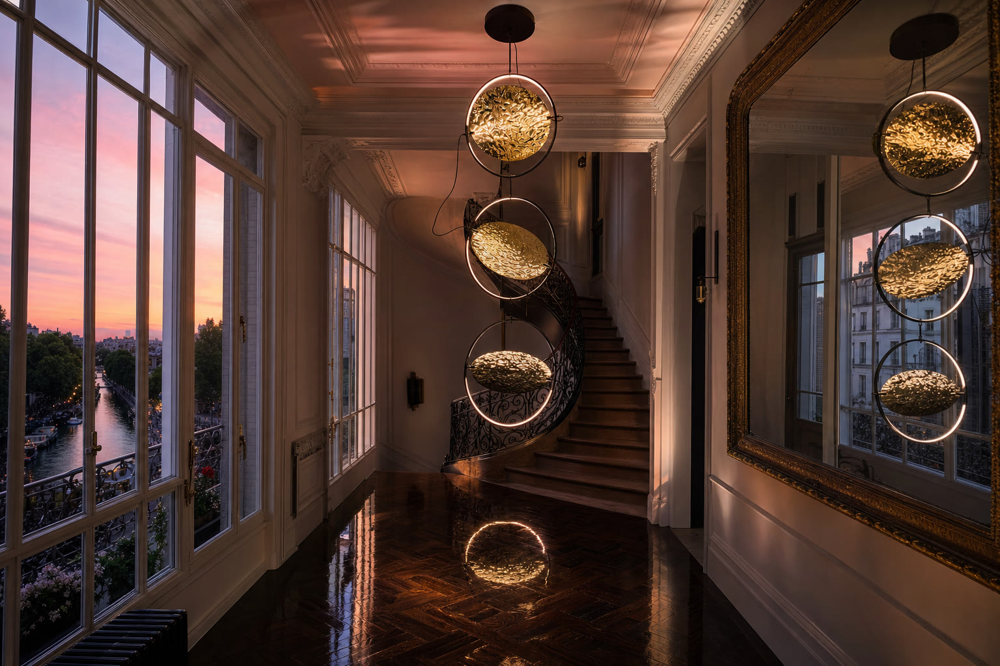
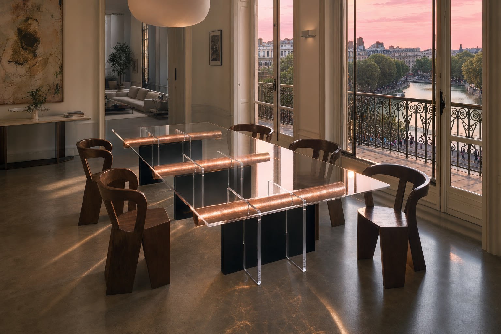
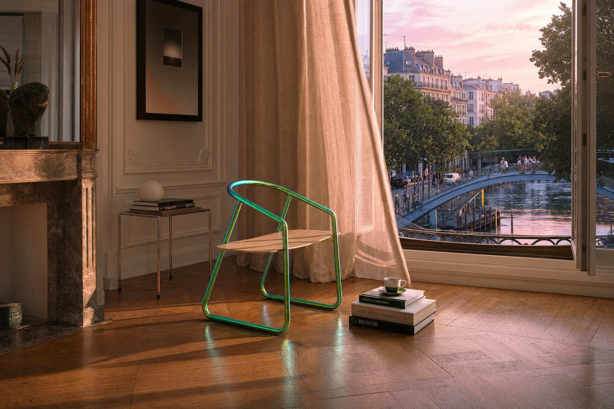
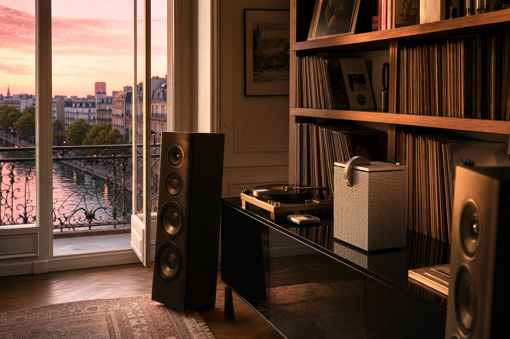
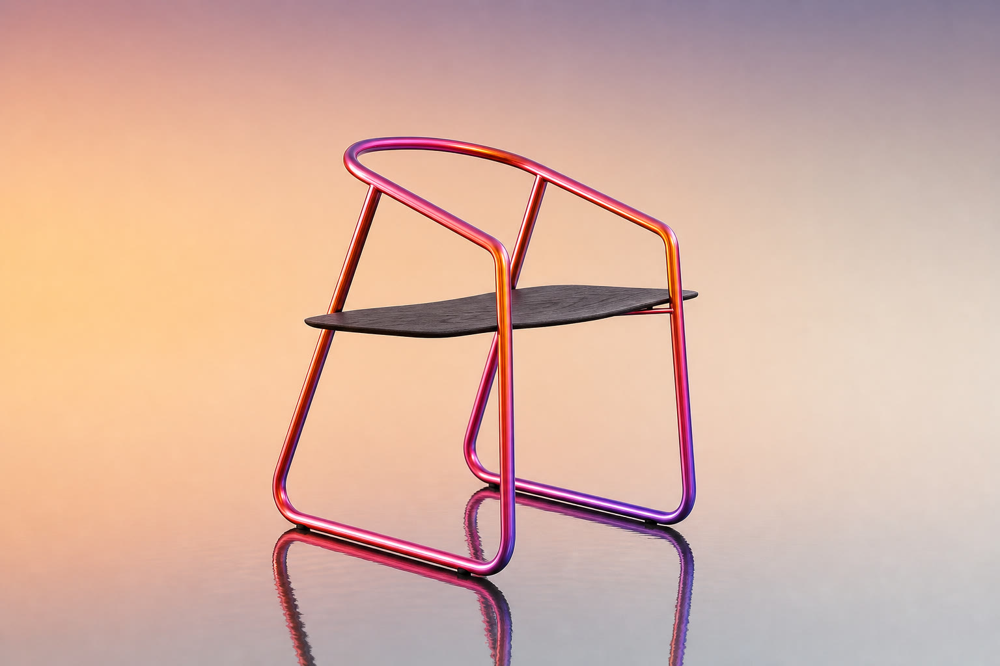
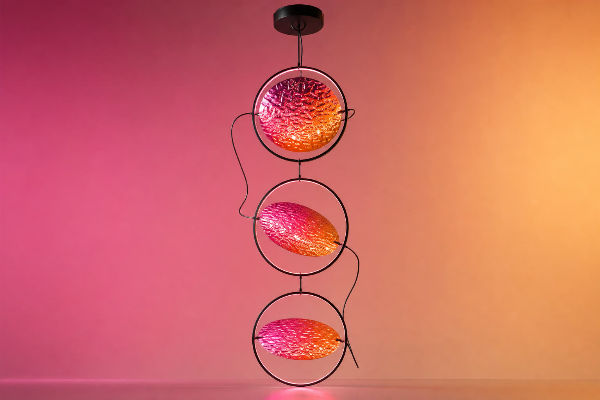
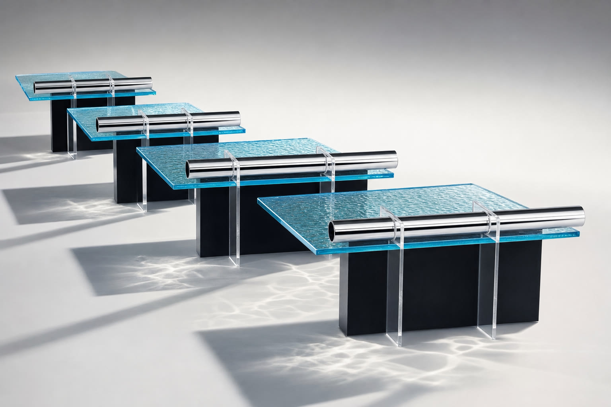
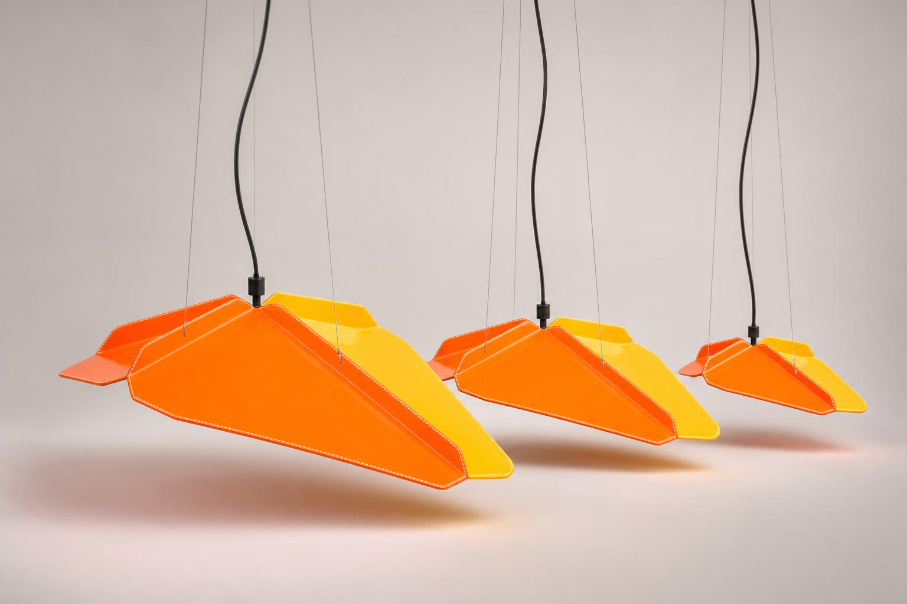
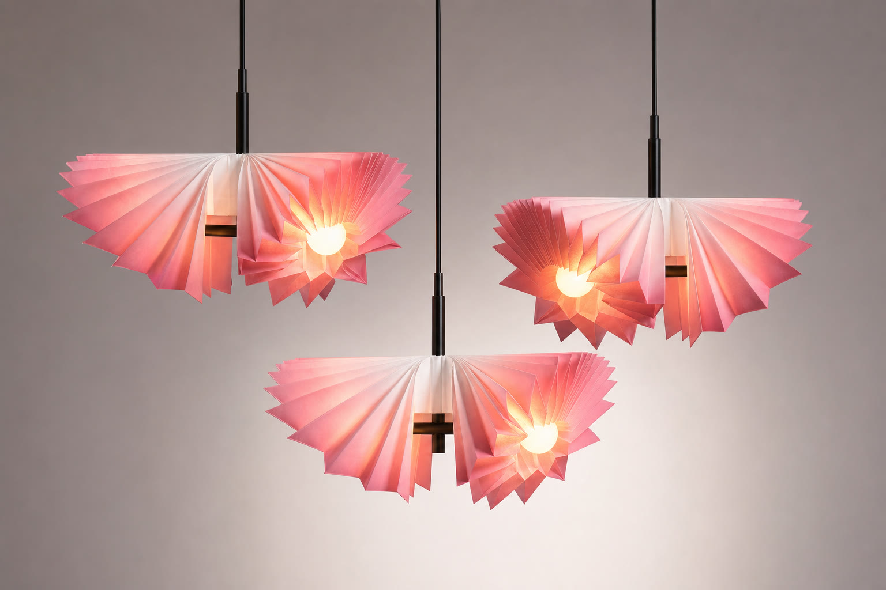
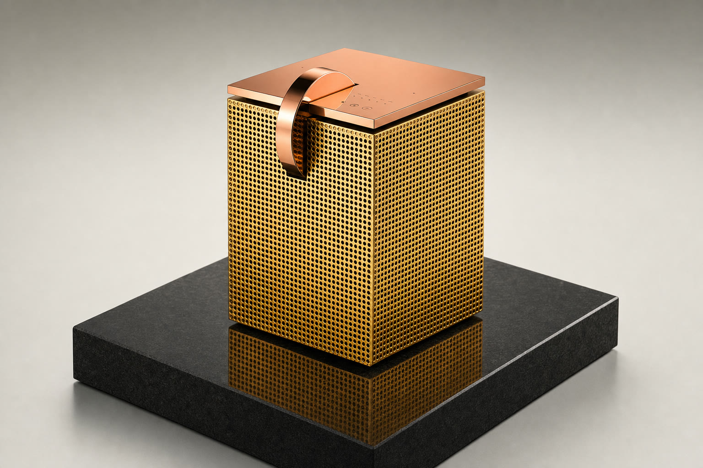

Les pièces rentrent chez elles. Six intérieurs parisiens à la verticale du canal
Saint-Martin, saisis à l'heure où la canicule capitule ; puis six déclinaisons que l'atelier
jure n'avoir jamais signées. Le carnet de commandes dit autre chose.
I. Les Intérieurs
Lumière de 21h47, reflets vérifiés à l'écluse près, crédibilité non négociable.

Éclipselustre, or martelé — cage d'escalier, parquet point de Hongrie
L'or martelé prend la rampe de fonte de vitesse et le miroir doré consent à doubler la mise.
Sur le point de Hongrie ciré, trois lunes exactes ; la quatrième est restée dehors, au-dessus de l'écluse.

Apollotable, acrylique & cuivre — salle à manger, béton ciré
L'acrylique s'efface avec une discrétion de majordome ; restent trois fûts de cuivre en
lévitation dans le soir. Sur le béton ciré, les caustiques dressent une seconde table, réservée à la lumière.

Colorplanechaise, acier iridescent & chêne — angle de lumière, rideau de lin
Entre le lin lavé et le marbre de la cheminée, l'acier iridescent glisse du vert au bleu au rythme
du rideau. Sur le parquet, sa flaque d'eau fraîche ; dehors, la passerelle attend que quelqu'un
règle le passage.
Le cuir cognac de la suspension veille sur son propre troupeau, canapé compris, et la laque noire
archive la scène. Le chat, seul critique invité, a rendu son verdict en s'endormant.
Trois corolles de papier plissé au-dessus de la table d'atelier, leurs éventails d'ombre épinglés
au mur comme des études préparatoires. La lampe dessine mieux que la maison n'osera l'admettre.

S5amplificateur, aluminium perforé — salon d'écoute, buffet laqué
L'aluminium micro-perforé se mire dans la laque du buffet pendant que le crépuscule raye sa grille
de rose. Le vinyle tourne pour la forme ; c'est la rumeur du quai que la pièce écoute.
II. Les Déclinaisons — Édition Canicule
Mêmes lignes, matières déraisonnables. L'atelier nie ; la galerie encaisse.

Colorplane Caniculeanodisé coucher de soleil, chêne brûlé
Le ciel de l'été 2026 anodisé au degré près, du fuchsia du soir au violet d'orage ;
l'assise en chêne brûlé garde la mémoire de la canicule. Chaque pièce est livrée posée sur son propre reflet.

Éclipse Caniculedisques martelés, dégradé rose fondu
Le martelage retient le dégradé rose fondu comme l'eau de l'écluse retient le couchant.
Trois soleils en suspension, pour ceux qui exigent 21h47 toute l'année.

Apollo Piscineacrylique bleu bassin, chrome miroir
L'acrylique moulé garde la ride exacte d'un bassin au petit matin ; le chrome miroir
fait le maître nageur. Les caustiques sont livrées avec, le chlore reste en option.

Cosse Super Soakercuir glacé orange & jaune fluo
Cuir glacé orange et jaune, surpiqûres blanches au fil tendu : la sellerie s'aligne
officiellement sur l'arme de service du canal. Portée garantie, en lumière seulement.

IKO Flamantpapier plissé, dégradé rose flamant
Papier plissé teinté dans la masse, du rose flamant au blanc de plume, monté à trois hauteurs
de vol. Ils ne migrent plus ; l'écluse leur suffit.

S5 Or Marteléor brossé martelé, cuivre poli, granit noir
Grille d'or brossé martelé, capot et anse en cuivre poli, socle de granit noir : le boombox
du quai passe en chambre forte. La basse n'a pas changé de tarif ; 2 €, dédicace comprise.
2,00 €
Mission : rentrer les meubles avant l'orage — accomplie